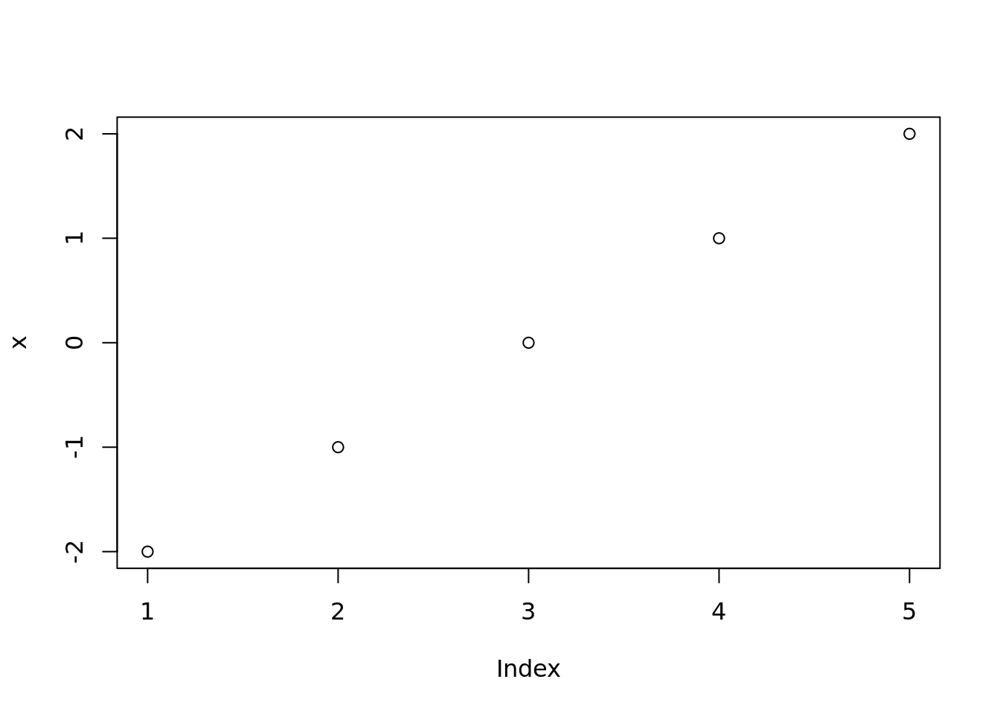

Research data management: how to get to 'good enough'
Motivation and goals
This post is fully inspired by Wilson et al. (2017), where a set of good enough practices in scientific computing are laid down. It is a mandatory annual reading. If you are doing research in the private sector or academia, and does not see any immediate benefit on adopting (any of) the steps shown therein, regardless if you hands-on programming… well, you better wake up because you may be stuck with old scientific practices that don’t fit in our current society anymore.
Here I present a workflow, suggest external resources, share personal experiences and other considerations for those that have recognized the importance of changing their habits of research data management, but have not taken their first step in this journey.
x <- seq(-2,2)
plot(x)
You have started a project, then what? What are the rules regarding its data management? It is easy to get overwhelmed with suggested practices with verisonc ontrol software, collaboration, data analysis, manuscript writing. The amount of stuff on the internet is huge and sorting through the noise, and gathering energy to overcome the energy barrier and actually put a few of these suggested solutions in action is not easy. If you are doing research, which typically involve data collection and analyzing - well, in fact there is some scientific computing aspects in your life. You may not be a programmer but that’s not the point here. this post highlights the ‘good enough practices in scientific computing’ as published by Wilson et al. (2017).
Too long, didn’t read
** A few simple but practical strategies to move towards research data management best practices are revised herein. is getting pushing academy towards data sharing and availability. Within industry-funded research, sponsors benefit the most when accessing data and leveraging their internal resources. **
## Personal experiences
At work, we deal with many sources of raw data, typically coming from analytical instruments but others from laboratory procedures. Data coming from instruments are immediatly backed-up in a few different locations, including off-site. Data from laboratory procedures are manually converted into raw data files and stored as well. Note that every team member has a smartpen capable of digitally recording all the laboratory notes. An SVN server provides version control capabilities, and users interaction are very straightfowards with TorsoiseSVN (the SVN server has also a system of back-ups). Regardless of the type of work done by the researcher within a project, “Commits” are expected as often as significant advances are made. For those projects/users working with coding, private GIT repos are also deployed in Github. For projects in which external access to data is required (e.g. out of campus stakeholders), a MySQL server hosted within the University data center feeds a R-Shiny application that stakeholders can interact with.
It sounds like a lot, but in reality is not.
Line up your resources
IT solutions: if you have some bad blood with the IT folks in your organization, it is time to make piece with them, specially if you have no interest in deploying a few of these yourself. Train your team: get ready to submit you team to mandatory training.
Importance
Compliance to funding agency rules is just one part of it. I don’t know where it is, I have deleted it inadvertedly, my dog ate my data. Stakeholder enagement. De-personalizing a project
In academia, people come and go, so such setting is a must
Script to create directories
Cheers!